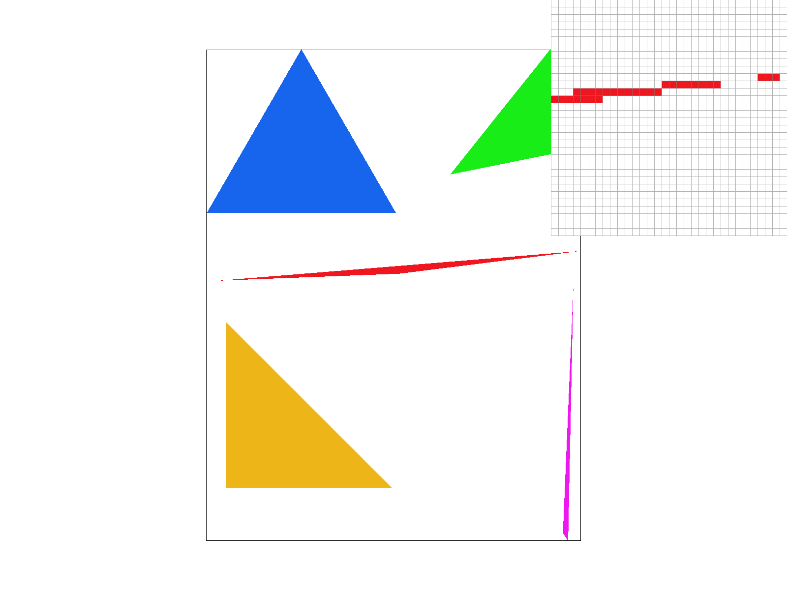
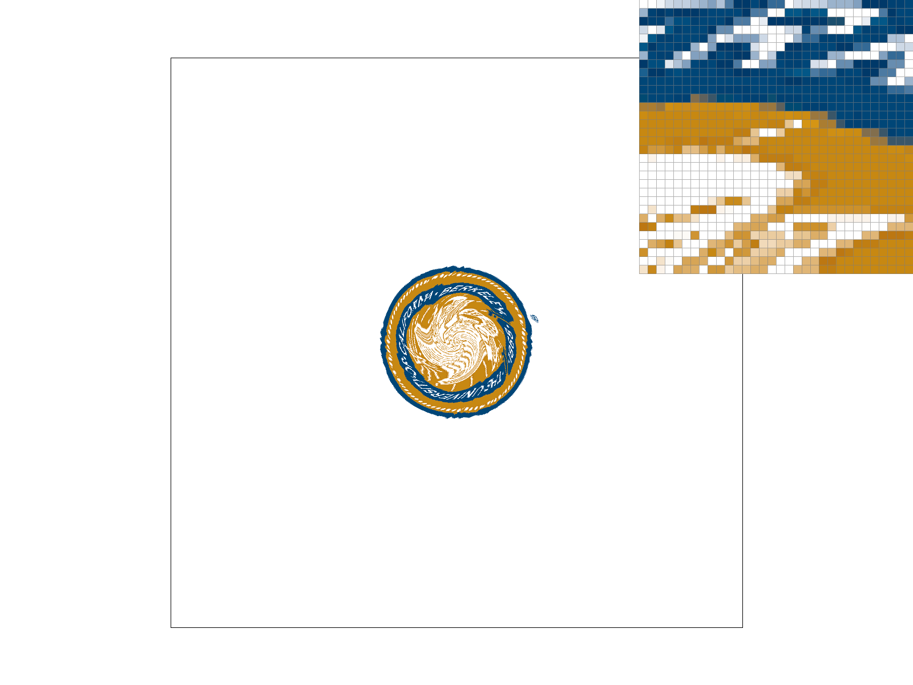
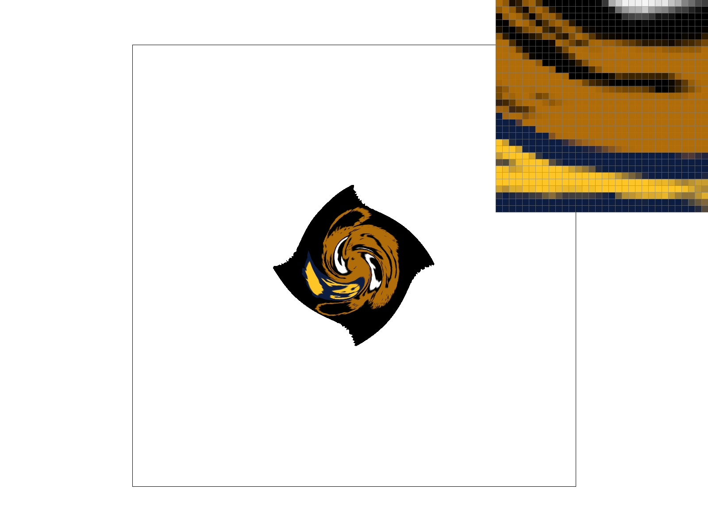
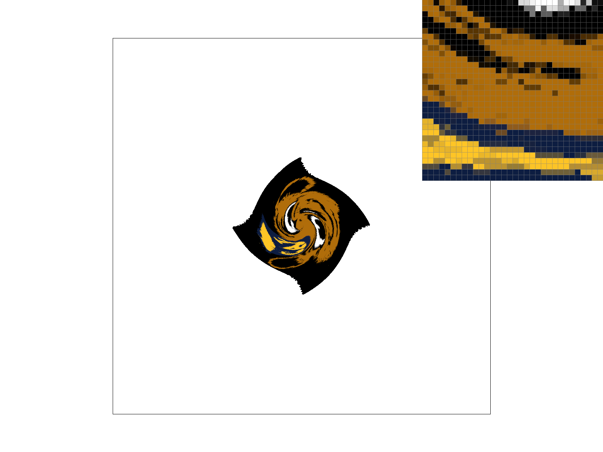
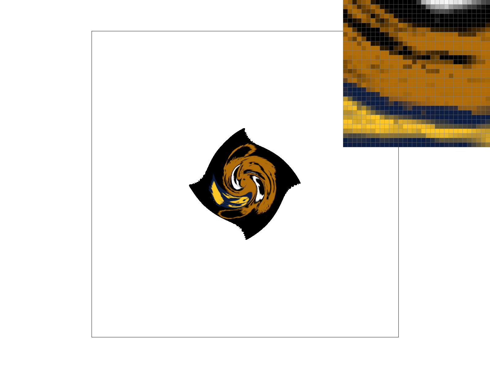

CS184/284A Spring 2025 Homework 1 Write-Up
Link to webpage: cal-cs184-student.github.io/hw-webpages-robertni/
Link to GitHub repository: github.com/cal-cs184-student/sp25-hw1-edxkos
Overview
In this homework assignment, I learned and used various methods of how to rasterize pictures. Starting from a basic sampling method to rasterize single-color triangles, I built on that to improve graphics quality with supersampling, interpolation, and level sampling. Throughout this homework, I found it very interesting just how much math goes behind creating visually appealing images and began to think about how the graphics techniques and concepts used here have shown up in video games, music veideos, etc.Task 1: Drawing Single-Color Triangles
To rasterize triangles, I used the point-in-triangle test as described in Lecture 2. Specifically, I first check winding order to ensure the point-in-triangle test works. I did this by taking the cross product of line 1, from (x0, y0) to (x1, y1), and line 2, from (x1, y1) to (x2, y2). If the curl is positive, we know that the triangle has counterclockwise winding order. If the curl is negative, the triangle has clockwise winding order and the values of (x1, y1) and (x2, y2) should be swapped to flip the winding order.After flipping winding order, I created a bounding box for the triangle within which the pixels will be checked. This was done by finding the min and max of the x and y values of the input points. Using those as the bounds of a loop, I then set up the samples to always be centered at the 0.5 spot of each sample and then iterated through each pixel within this bounding box and used the point-in-triangle test, where I found L as defined in Lecture 2. If L is greater than or equal to 0, the point is within the triangle and fill_pixel was used to color in the pixel.
My algorithm does exactly the same as checking each sample within the bounding box of the triangle. This is no worse than checking each sample within a bounding box because as described above, I created a bounding box that includes all points that could be within the triangle, and proceeded to use a loop to check every point using the point-in-triangle test.
Below is a photo of basic/test4.svg, zooming in on the bottom part of the magenta triangle. The triangle is colored in correctly, and jaggies are visible.
Task 2: Antialiasing by Supersampling
To supersample, I first kept the general framework of rasterize_triangle from Task 1. I colored in the sample buffer, adjusting rasterize_triangle to work for various sample buffer sizes. The sample buffer size changes based on sample rate, so for every x and every y value, I multiply it by sqrt(sample_rate) to translate the points to the larger sample buffer space. Then, using the new values, I proceed with the point-in-triangle test on the sample buffer as usual.After rasterizing the sample buffer, I modify resolve_to_framebuffer in order to downsample the sample buffer to the frame buffer pixels. This is done by creating an array of colors, which holds all the sample colors from the sample buffer that correspond with one pixel in the frame buffer. Then, I take the average of these colors and translate the values into doubles, which are then stored into the rgb_framebuffer_target, which will fill in the framebuffer with the corresponding averaged colors.
Supersampling is useful due to its ability to antialias, reducing the appearance of jaggies by “blurring out” the coloring at the edges of triangles. I am antialiasing with supersampling by trying to get a higher resolution of colors without actually increasing the number of pixels on the screen. By blurring out the edges of triangles, our triangles are antialiased because the appearance of jaggies is reduced.
Examples of supersampling using basic/test4.svg are shown below:
|

|
|
From these pictures and their corresponding pixel inspectors, we can see that increasing the sampling rate visibly smooths out the edges of these triangles. In the sample rate 1 case, there are jaggies, and the edge is broken up into a staircase structure. At sample rates 4 and 16, this staircase pattern is broken up and almost blended in with the background white to create a less jagged appearance. These observations occur because we are creating more of a gradient of different colors at the edges when we supersample: every pixel is not just white or red: the color is some average of white and red at the edges, which reduces the contrast we see.
Task 3: Transforms
My cubeman is jumping in joy. Taking reference from stock photos, I rotated his arms and legs into positions that look more like jumping up. Upon rotating, I realized that I also had to change some of the translations from limb to limb for it to look correct. Additionally, I changed some of the angles and proportions of the torso and legs to make cubeman look less stiff when jumping. I changed cubeman to a sky blue color because I like sky blue.Task 4: Barycentric coordinates
Barycentric coordinates are a coordinate system that allow you to find points within a triangle relative to the vertices by smoothly interpolating across the three vertices. This is done by having three coordinates summing to 1 and describing the positioning of a point in proportion to the three vertices. Specifically, (x,y) = alpha*A + beta*B and gamma*C for vertices A, B, and C and coordinates alpha, beta, and gamma. The below triangle is an example of using barycentric interpolation.As seen, there are green, red, and magenta vertices. If we define coordinates alpha, beta, and gamma corresponding with the green, red, and magenta vertices, respectively, you can see that alpha will be larger close to the green vertex, beta will be larger close to the red vertex, and gamma will be larger close to the magenta vertices. Using alpha, beta, and gamma as a reference for how close to the three vertices, I can smoothly blend colors, where the value of the color is more heavily influenced by the coordinate that is largest (which indicates the vertex the point is closest to).
Below is basic/test7.svg, showing a color gradient wheel that is made with the help of barycentric coordinates and interpolation.

Task 5: "Pixel sampling" for texture mapping
Pixel sampling is a process by which we take a texture/image and sample at pixels in that texture in order to map onto a separate triangle that is defined in a different coordinate system. By understanding the transforms that convert from one coordinate system to another, it’s possible to sample pixels in a texture and overlay the texture onto a different surface consisting of triangles.To perform texture mapping, I followed the general framework/foundation of the original rasterize_triangle function, meaning I had to first find points within the triangle we wish to map a texture to. Then, I calculate the barycentric coordinates of that location. Since barycentric coordinates are constant for points within a triangle regardless of the underlying coordinate system, I can use these coordinates to find the corresponding (u,v) point in the texture space. Then, multiplying u by width and v by height to scale the points to the size of the texture space, I can sample the texture space for the color at the right pixel in texture space and then fill in the corresponding (x,y) pixel.
Since the exact corresponding (u,v) point may not be an integer pixel location in texture space, we need methods to interpolate the value we want. Nearest sampling just takes the pixel closest to the (u,v) point we want to sample (this can be done by rounding u and v to integer values). Bilinear sampling interpolates the value at the (u,v) point we want from the four closest pixels to it, and to do this, I followed the interpolation formula and steps as outlined in the lecture notes.
Below are four examples of pixel sampling to show differences in different techniques.
|

|
|
|
|
Since the Berkeley seal is fairly small, all the images look somewhat similar when looking from afar. However, the pixel inspector shows that the bilinear sampling method creates a smoother look when zooming in. The nearest sampling method leaves a rather jagged appearance, and the contrast from pixel to pixel is larger compared to the bilinear sampling, where there is a gradual transition between different colors. There will be a larger difference between the two methods when the texture that is used has quick transitions and high contrasts from section to section of the image. This is because nearest sampling will just take one of the pixels from the texture image, which could leave out details at transition/contrast points, while bilinear sampling will average across points at a transition zone, which helps create a more gradual change in color.
Task 6: "Level Sampling" with mipmaps for texture mapping
Level sampling is the process of pixel sampling where we can decide what resolution of a texture (mipmap levels) we want to sample from, rather than always sampling from a full resolution image. This helps reduce antialiasing since lower resolution images will blend colors more than the full resolution, reducing the amount of contrast from pixel to pixel. This was implemented using the equation for a D value as described in lecture notes. By calculating the D value, we get a float and then I can use this D level to determine the mipmap we wish to use. In nearest mipmap sampling, I round the D value to an integer level that directly corresponds with a certain mipmap level, making sure to stay within the bounds of valid potential levels (0 to the # of mipmaps available). In bilinear mipmap sampling, I sample both from mipmap level D and level D+1 and then use linear interpolation to find an intermediate value.From observations throughout this homework, it seems like supersampling is possibly the most effective at antialiasing: the difference between sample rate 1 and sample rate 4 seems to be larger than the difference that other sampling methods create. Supersampling is a straightforward way to blur out edges by averaging across colors. However, it is probably also true that supersampling is relatively slow and takes up a lot of memory: everytime sample rate increases, the array storing RGB values must also increase, and this can quickly take up a lot of space and time to iterate through. The slowness of supersampling is also evident when doing the homework because there is also a substantial pause going from sample rate 1 all the way to sample rate 16.
Bilinear pixel sampling also seems to have a substantial effect on an image in comparison to just using nearest pixel sampling. Although not an entirely accurate comparison, performing bilinear pixel sampling in texture mapping is in a way similar to doing supersampling at sample rate 4 since we are finding some sort of averaging of neighboring values rather than just grabbing one pixel value. From images, it is also evident that bilinear pixel sampling can create a fairly significant blurring effect (also shown below). This also doesn’t take much more time than just nearest pixel sampling since there is just one extra calculation and then one more data access that is taken into consideration for this.
And lastly, for level sampling, there seems to be little difference between using level 0 vs. nearest mipmap sampling vs. bilinear mipmap sampling. A main difference between using level 0 sampling and nearest mipmap level sampling is that there seems to be greater definition/detail when using nearest sampling. The difference between nearest mipmap sampling and bilinear mipmap sampling is smaller, which makes sense considering that we are considering level D and some level that is less than +1 away from level D. This method probably is a little bit more memory and time expensive considering the larger amount of calculations necessary and the fact that you have to store multiple versions of the same image as several mipmaps. However, from observation, it still doesn’t seem as slow as supersampling.
Below are four different combinations of level sampling and pixel sampling techniques.
|
|

|

|

|